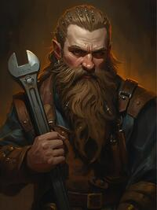
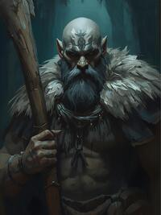

Cindervale Alchemist is a single-player browser RPG where you run an alchemy shop across four unique locations. Brew potions, inscribe enchantments, forage ingredients, manage staff, build your workshop, and invest in your settlement. When your character reaches their peak, Pass the Torch and start a new generation carrying forward your legacy.
Each day you have a pool of Energy (base 4, increased by upgrades, class features, and feats) and Hours (base 4). Spend them on actions:
Gain XP from every action. Level up to earn class levels, skill points (3 per level), and feats (1 per level). Choose specializations at class level 3. Pursue prestige classes when you meet their prerequisites. Build toward the Hollow March endgame event, then Pass the Torch to begin anew.
Choose one of six races at character creation. Each provides a permanent skill bonus that applies to all d20 checks using that skill. These bonuses stack with skill ranks and ability score modifiers.
| Race | Bonus | Description |
|---|---|---|
| Human | +1 Persuasion, +1 Networking | Versatile and well-connected. Humans excel at diplomacy and cross-faction dealings. Their natural charm opens doors everywhere they go. |
| Halfling | +1 Persuasion, +1 Divination | Small but resourceful, with a supernatural knack for persuasion. Halflings see things others miss and talk their way through anything. |
| Elf | +2 Research | Long-lived scholars with a deep affinity for knowledge. Elves uncover recipes and patterns faster than any other race. |
| Dwarf | +2 Precision | Master crafters with steady hands. Dwarves produce consistently superior work through sheer technical skill. |
| Goliath | +2 Endurance | Tireless workers who shrug off fatigue. Goliaths can sustain effort that would break other races. |
| Dragonborn | +2 Inscription | Born with an innate understanding of runes and sigils. Dragonborn are natural enchanters whose inscriptions burn bright. |
Every character has five ability scores. At character creation, each starts at 10 and you have 12 points to distribute freely. Ability scores provide modifiers to skill checks and determine your effectiveness in different activities.
| Stat | Abbr. | Governs | Key Class |
|---|---|---|---|
| Creativity | CRE | Improvisation and experimental brewing | Alchemist |
| Intuition | INU | Attunement, persuasion, and divination | Warden |
| Acumen | ACU | Research, analysis, and networking | Scholar, Enchanter |
| Technique | TEC | Precision, inscription, and refinement | Artificer |
| Discipline | DIS | Endurance and focus. Key stat for combat checks. | Combat / Survival |
Skills are pure d20 check bonuses. When you make a skill check, you roll d20 + ability modifier + skill rank bonus. Natural 1 always fails; natural 20 always succeeds.
| Rank | Level | Bonus | Cost to Reach |
|---|---|---|---|
| Untrained | 0 | +0 | — |
| Trained | 1 | +1 | 1 skill point |
| Expert | 2 | +2 | 2 skill points |
| Master | 3 | +3 | 3 skill points |
You earn 3 skill points per level. Total cost to reach Master from Untrained: 6 skill points (1 + 2 + 3).
| Stat | Skills |
|---|---|
| CRE | Improvisation, Innovation, Adaptation |
| INU | Attunement, Danger Sense, Arcane Sensitivity, Divination, Persuasion |
| ACU | Research, Analysis, Networking |
| TEC | Precision, Inscription, Extraction, Refinement |
| DIS | Endurance, Focus |
There are 5 base classes. Each class has 10 levels of features and 3 specialization paths that unlock at class level 3. You can multiclass freely — your character level is the sum of all class levels. Class levels are earned by spending XP, with higher levels costing more.
Primary Stat: CRE — Proficient Skills: Attunement, Improvisation
Sense ingredient harmony intuitively, producing better potions more reliably. The Alchemist is the core brewing class — brew potions, the fundamental craft loop of the game.
| Lv | Feature | Description |
|---|---|---|
| 1 | Potion Crafting | Begin your alchemical journey. +1 craft bonus and 10% ingredient save chance. |
| 2 | Ingredient Sense | +1 to all craft checks. +1 extraction bonus from heightened reagent awareness. |
| 3 | Specialization | Choose a specialization path. +5% ingredient save chance. |
| 4 | Efficient Brewing | 15% chance to save one ingredient per brew. |
| 5 | Double Batch | 25% chance to produce 2x potions on success. |
| 6 | Intuitive DC | Craft checks can't roll below 5. 10% lucky brew chance for bonus potions. |
| 7 | Master Brewer | +2 to all craft checks (stacks). Unlock one legendary recipe. |
| 8 | Reagent Attunement | Foraging may yield bonus ingredients attuned to your most-brewed recipe. +15% ingredient efficiency on all crafts. |
| 9 | Perfected Art | Craft failures on recipes brewed 10+ times produce a lesser version. Once per day, reroll a failed craft. |
| 10 | Magnum Opus | Your 3 most-brewed recipes auto-succeed at Masterwork quality. Once per day, brew any recipe mastered 20+ times with zero ingredients. |
Healers and clinicians. Cure ailments, brew restorative potions, and earn gold treating patients. Clinic patients arrive daily with ailments that must be diagnosed and treated with the right healing potion.
| Lv | Feature | Description |
|---|---|---|
| 3 | Healer's Touch | Healing potions are 2x value/XP. Healing recipes -2 DC. |
| 6 | Panacea | Unlock multi-cure recipes. Healing potions also restore morale to staff. |
| 10 | Miracle Worker | Clinic patients auto-diagnosed. Clinic treatments pay 3x gold and XP. Once per day, Miracle Cure on any patient (5x reward). Healing potions 50% chance to produce bonus Masterwork copy. |
Masters of ingredient conversion. Transform materials at ever-better ratios and transmute across types.
| Lv | Feature | Description |
|---|---|---|
| 3 | Efficient Transmutation | Convert ingredients at 2:1 ratio. Unlock transmutation recipes. |
| 6 | Lead to Gold | Transmute faction-specific ingredients. Convert potions between types. |
| 10 | Philosopher's Stone | 1:1 ingredient conversion. Transmutations cost 0 hours. |
Brew volatile poisons and offensive concoctions. Sell deadly wares to guard factions for premium gold.
| Lv | Feature | Description |
|---|---|---|
| 3 | Volatile Mixtures | Unlock offensive/volatile recipes. Poisons sell 2x to local guard factions. +2 craft bonus on volatile recipes. |
| 6 | Concentrated Dose | +20% double batch chance. +2 craft bonus. |
| 10 | Plague Doctor | Legendary venom recipes. +3 craft. 30% double batch on volatile. Craft failures produce lesser venoms. Venom contracts pay 3x. 2 legendary poisons reduce threat by 15. |
Primary Stat: ACU — Proficient Skills: Inscription, Arcane Sensitivity
Turn mundane items into treasures with runes and inscriptions. Inscribe runes for premium gold from customers.
| Lv | Feature | Description |
|---|---|---|
| 1 | Inscribe Enchantment | Can enchant customer items. +1 inscription, material cost -1. |
| 2 | Mana Flow | +1 to all inscription checks. Enchanting material cost reduced by 1 (min 1). |
| 3 | Specialization | Choose a specialization path. +5 inscription bonus. |
| 4 | Arcane Mastery | +8% enchant success chance. See customer satisfaction hints. |
| 5 | Dual Inscription | Apply 2 enchantments to a single customer item (second at +3 DC). |
| 6 | Resonance | Enchanting customers pay 25% more gold. Unlock 2 new enchantment patterns. |
| 7 | Overcharge | Natural 20 inscription = "Masterwork" enchantment worth 3x gold. |
| 8 | Archmage | DC 12 and below enchantments auto-succeed. +2 inscription (stacks). |
| 9 | Rune Library | Know all enchantment patterns regardless of faction requirements. |
| 10 | Reality Weaver | +12 flat inscription bonus, +50% gold from enchanting. Crits on 17+. |
Forge powerful weapon enchantments. Martial runes command top prices from warriors and adventurers.
| Lv | Feature | Description |
|---|---|---|
| 3 | Battle Runes | Weapon/martial enchantments +25% value. -1 DC on weapon runes. |
| 6 | Runic Mastery | All enchantment material costs -1. Can re-enchant failed items same day. |
| 10 | Legendary Arms | Artifact-grade weapon enchantments. Martial enchants worth 3x gold. |
Specialize in defensive enchantments. Layer protective wards for lucrative shield commissions.
| Lv | Feature | Description |
|---|---|---|
| 3 | Wards | Defensive enchantments +50% value. +2 to defensive inscription checks. |
| 6 | Layered Wards | Apply 3 enchantments to armor items. 40% chance to save materials on enchant success. |
| 10 | Unbreakable | Permanent wards. Defensive enchants auto-succeed DC 15. Shield commissions pay 3x. Once per day, Fortress Ward reduces all threats by 5 for 3 days. |
Craft exotic utility enchantments and tap into planar power sources. Attract rare, high-paying customers.
| Lv | Feature | Description |
|---|---|---|
| 3 | Exotic Inscriptions | Utility/exotic enchantments unlocked. +2 to exotic inscription checks. |
| 6 | Planar Weave | Extraplanar power sources. Exotic enchants worth 2x and attract special customers. |
| 10 | Planar Convergence | Impossible enchantments. Combine two enchant types into one inscription. |

Primary Stat: TEC — Proficient Skills: Precision, Refinement
Precision engineers who optimize crafting speed, material usage, and workshop efficiency. Optimize everything, salvage failures.
| Lv | Feature | Description |
|---|---|---|
| 1 | Technical Crafting | +1 to TEC-based craft checks. Gain proficiency in Precision and Refinement. |
| 2 | Salvage | Recover 50% of ingredients on craft failure (rounded up). |
| 3 | Specialization | Choose a specialization path. +10% salvage on failures. |
| 4 | Calibration | -1 DC for recipes you've brewed 3+ times. Auto-succeed DC 8 and below. |
| 5 | Overclock | Workshop upgrades provide 50% more of their numerical bonuses. |
| 6 | Production Line | Batch brew: +10% success rate per item after the first. |
| 7 | Prototype | Once per day, reroll a failed craft. +15% discovery chance from research. |
| 8 | Grand Artificer | Unlock legendary device recipes. Workshop upgrade costs -25%. |
| 9 | Systematic Mastery | Batch brew cap +3. All batch brews show individual roll results. |
| 10 | Masterwork Engine | Two free 0-hour crafting actions per day. Batch size +2. 100% salvage on failures. Upgrades cost -30% and provide double bonuses. |
Build utility gadgets and experiment with unconventional techniques. Innovation over brute force.
| Lv | Feature | Description |
|---|---|---|
| 3 | Gadgeteer | Craft utility gadgets for passive bonuses. +1 craft. +15% experiment discovery. 50% salvage. |
| 6 | Swiss Army | Gadgets provide multiple benefits. +15% batch success. Upgrades -15%. |
| 10 | Masterwork Tools | All craft DCs -2 permanently. 90% salvage. Gadgets upgrade indefinitely. Equip 2 gadgets. |
Master workshop builder. Upgrades cost less, staff work harder, and legendary blueprints reshape production.
| Lv | Feature | Description |
|---|---|---|
| 3 | Workshop Pro | Workshop upgrades cost 50% less gold. +2 to DIS checks. |
| 6 | Assembly Floor | Batch brewing capacity +2 (brew up to 7 at once). Staff efficiency +20%. |
| 10 | Master Builder | 3 legendary blueprints: Alchemical Forge (auto-brews most profitable recipe), Crystal Greenhouse (1 random rare ingredient daily), Arcane Conduit (+2 Energy permanently). Half construction time. |
Waste nothing. Salvage failed brews, break down items for materials, and turn spoilage into profit.
| Lv | Feature | Description |
|---|---|---|
| 3 | Zero Waste | 75% salvage on failure. Break down potions. 50% of spoiled ingredients become Alchemical Residue. |
| 6 | Deconstruct | Break any item into components. Failed enchants return all materials. |
| 10 | Perfect Reclamation | One free craft per day (no ingredients consumed). Deconstruction yields 150%. |
Primary Stat: ACU — Proficient Skills: Research, Analysis
Discover recipes faster, earn more XP, and turn experiments from gambles into science. Research, discovery, XP acceleration.
| Lv | Feature | Description |
|---|---|---|
| 1 | Research Study | Can conduct research studies to discover recipes. +5% discovery chance. |
| 2 | Speed Reader | One free research study per day (no hour cost). +10% base discovery chance. |
| 3 | Specialization | Choose a specialization path. +5% discovery chance. |
| 4 | Eureka! | Experiments: +15% discovery chance. On discovery, show recipe stat/DC info. |
| 5 | Academic Network | +15% XP from all sources. +1 free research study per day (2 total). |
| 6 | Cross-Reference | Experiment Bench shows hints based on how close your combination is. |
| 7 | Thesis Defense | +3 to all ACU-based checks. Research can discover enchantment patterns too. +15% discovery. +10% XP. |
| 8 | Grand Theorem | +25% discovery from all sources. See full ingredient tables for explored regions. |
| 9 | Polymath | +2 to all craft, inscription, and extraction checks. +10% XP from all sources. |
| 10 | Omniscience | Know all recipes. Experiment Bench shows exact results. +2 craft. +30% XP. Publish papers for passive gold. |
Publish academic papers for passive income and reputation. Research discovers more, faster, and better.
| Lv | Feature | Description |
|---|---|---|
| 3 | Published Research | 2x XP from research and experiments. Can publish papers for passive gold. |
| 6 | Peer Review | Research studies have +20% discovery chance. Papers earn more over time. |
| 10 | Grand Unified Theory | Research produces 2 discoveries instead of 1. Papers earn faction rep. Scaling craft bonus from paper count (+1/+2/+3). |
Document flora and geology in a Field Journal. Unlock permanent yield bonuses and seasonal mastery.
| Lv | Feature | Description |
|---|---|---|
| 3 | Field Guide | See full ingredient tables for explored regions. Experiments with foraged ingredients +15% discovery. |
| 6 | Ecological Insight | Research discovers region-specific recipes. +20% XP from foraging and experiments. |
| 10 | Nature's Library | Every expedition yields 1 bonus hidden-area ingredient. Seasonal ingredients available all seasons. Once/day commune reveals highest-yield region. Journal craft bonus +2 for documented ingredients. |
Pursue lore fragments and quest chains. Board quests refresh faster, and deep knowledge grants permanent stats.
| Lv | Feature | Description |
|---|---|---|
| 3 | Deep Records | Quest log shows hidden objectives. +30% quest XP. |
| 6 | Master Index | Board quests refresh twice daily. Quest chains unlock earlier. |
| 10 | Living Archive | Completed lore chains grant permanent +1 to a stat (up to 3). 25% quest lore fragment chance. Board quests 3x daily with rare-ingredient quest. Faction alignment bonuses 50% stronger. |

Primary Stat: DIS — Proficient Skills: Extraction, Endurance
Masters of wilderness and expedition. Make foraging dramatically more productive.
| Lv | Feature | Description |
|---|---|---|
| 1 | Trailblazer | -1 travel time to all regions (min 0). Gain proficiency in Extraction and Endurance. |
| 2 | Enduring Spirit | +1 Energy per day. Weather penalties halved. |
| 3 | Specialization | Choose a specialization path. +1 extraction bonus. |
| 4 | Iron Constitution | Immune to expedition events that cost time. |
| 5 | Expert Forager | Critical extraction (nat 20) yields 3x ingredients. Successes yield +1 bonus. |
| 6 | Deep Mapping | Forage a second region in same expedition at -2 hours. |
| 7 | Wilderness Mastery | +2 extraction bonus. Positive expedition events 2x more likely. 15% bonus rare find per hour. |
| 8 | Expedition Commander | Staff foraging yields +40%. Staff gain XP 25% faster. |
| 9 | Indomitable | +3 extraction bonus. +1 bonus ingredient per success. Failed extractions still yield 1 common ingredient. |
| 10 | Legend of the Wild | All travel times become 0. +50% foraging yields. Overnight foraging. |
Tame wild companions that gather, sell, scout, and fight alongside you. The signature beast-bond spec.
| Lv | Feature | Description |
|---|---|---|
| 3 | Tracker | Target ingredients without yield penalty. Befriend wild creatures. |
| 6 | Pathfinder | Discover hidden sub-regions with unique ingredients. Creature bonuses grow. |
| 10 | Apex Predator | Companions perform all actions twice per day. Highest-loyalty companion gains Legendary ability unique to its role. Solo expeditions from companion card (1/day, 0 Energy). |
Master of logistics. Double storage, reduce spoilage, and squeeze maximum value from every ingredient. Establish supply chain caravans.
| Lv | Feature | Description |
|---|---|---|
| 3 | Supply Chain | Workshop storage doubled. Ingredient efficiency +25%. Spoilage threshold +4. |
| 6 | Logistics Master | Staff foraging +25%. +25% personal yield. +4 spoilage threshold. Caravans always fresh. |
| 10 | War Room | Fully automated ingredient management. Foraging yield +100%. Spoilage threshold +8. |
Night expeditions for bonus foraging after dark. Guard the settlement against rising threats.
| Lv | Feature | Description |
|---|---|---|
| 3 | Night Watch | Night expeditions: 2 bonus gathering hours at +4 DC, increased danger. |
| 6 | Trap Setter | Set traps for guaranteed rare ingredient finds. Night danger reduced. |
| 10 | Eternal Vigil | Night expeditions 4 hours at +3 DC. All threats passively decay by 3/day. Once/day Preemptive Strike: 2 Energy to reduce any threat by 20. |
The Merchant class has been removed in the V2 balance patch. Its mechanics have been rehomed across the game for better integration:
This consolidation reduces class count from 6 to 5 while preserving every meaningful Merchant mechanic in a more flexible, multiclass-friendly form.
There are nine prestige classes. Prestige classes have mixed prerequisites — class levels, skill ranks, and feats. Each prestige class has 5 levels of features. Prestige levels count toward your total character level.
| Prestige Class | Requirements |
|---|---|
| Cartographer | Warden 3, Expert Extraction |
| Spellbrewer | Expert Precision, Expert Inscription |
| Magitech Engineer | Artificer 3, Enchanter 3 |
| Brand Master | Alchemist 3, Artisan's Touch feat, Shrewd Bargainer feat |
| Wildcrafter | Warden 3, Expert Extraction, Trained Attunement |
| Antiquarian | Scholar 3, Keen Eye feat |
| Siege Engineer | Warden 3, Artificer 3 |
| Arcanist | Scholar 3, Expert Arcane Sensitivity |
| Diplomat | Any two base classes at 3, Expert Persuasion |
Explorer-scholar who maps hidden regions containing unique ingredients.
| Lv | Feature | Description |
|---|---|---|
| 1 | Hidden Paths | Discover secret sub-areas within known regions with unique ingredients. 25% chance per forage hour. |
| 2 | Detailed Maps | Hidden area discovery chance +15%. Mapped areas yield +1 bonus ingredient. |
| 3 | Cartographer's Insight | See all ingredients in a region before committing to forage. +10% XP from foraging. |
| 4 | Pathfinder's Network | Staff foraging uses your mapped paths: +25% staff forage yield. |
| 5 | Legendary Atlas | Discover the Heartforge's hidden chambers. Unique legendary ingredients only you can access. |
Creates infused potions that combine brewing and enchanting effects.
| Lv | Feature | Description |
|---|---|---|
| 1 | Infusion Novice | Unlock Vigor and Clarity infusions. 2 infusions per day. Catalyst: any ingredient with 5+ stock. |
| 2 | Resonant Brew | Unlock Fortify infusion. Infusion DC penalty reduced by 1. 3 infusions per day. |
| 3 | Essence Weaver | Unlock Prosperity infusion. 25% chance catalyst is preserved. 4 infusions per day. |
| 4 | Arcane Distiller | Unlock Lingering infusion. Catalyst always preserved on Masterwork+ brews. 5 infusions per day. |
| 5 | Grand Spellbrewer | Stack two infusions on one brew (double catalyst). Infused shelf potions attract +1 daily customer. |
Builds magical automata that perform workshop tasks autonomously.
| Lv | Feature | Description |
|---|---|---|
| 1 | Automaton Frame | Build a basic automaton (1 active). Performs one task per day at 60% efficiency. |
| 2 | Improved Servos | Automaton efficiency +20%. Can assign to brew, forage, or shopkeep. |
| 3 | Second Automaton | +1 automaton slot (2 total). Automata gain XP and level up like staff. |
| 4 | Enchanted Core | Automata can perform enchanting tasks. Efficiency +20% (total 100%). |
| 5 | Master Construct | +1 automaton (3 total). Automata can perform prestige tasks. Self-repairing. |
Creates named product lines that build customer loyalty and premium pricing.
| Lv | Feature | Description |
|---|---|---|
| 1 | First Label | Create 1 brand with up to 2 recipes. Branded potions +10% sell. Brand levels up with sales. |
| 2 | Brand Recognition | Brands hold 3 recipes. +5 aligned faction rep per 10 branded sales. Sales tracker UI. |
| 3 | Product Line | 2nd brand slot. Brand orders appear (2x price). Branded shelf potions +10% sell chance. |
| 4 | Premium Label | Brands hold 4 recipes. Famous tier unlocks (+60% sell). Branded MW+ potions extra +25%. |
| 5 | Legendary Brand | 3rd brand slot. Famous brands attract collectors trading rare ingredients. 25% brand rep carries through Torch. |
Brews potions in the field using fresh ingredients for bonus potency. At Lv2+, unlock Wildcrafts — unique brews that affect the world itself.
| Lv | Feature | Description |
|---|---|---|
| 1 | Field Alchemy | 1 field brew per expedition from your haul. Fresh potions sell at 1.2x. Standard quality only. |
| 2 | Fresh Reagents | 2 field brews. Fresh 1.3x. Fine quality. +1 bonus ingredient. Unlock Seasonal Bypass wildcraft (1/day). |
| 3 | Wilderness Recipes | 3 field brews. Fresh 1.4x. Unlock 3 field-only recipes. Unlock Wild Ally wildcraft (2/day). |
| 4 | Master Fieldcrafter | 3 field brews. Fresh 1.5x. Masterwork field brewing. 15% double batch. Unlock Threat Suppression wildcraft (2/day). |
| 5 | Living Apothecary | 4 field brews. Legendary field recipe: Essence of the Wild. Enhanced wildcrafts: 3/day, 3-day Wild Allies, -12 threat suppression. |
Wildcrafts are outward-facing brews that affect the world around you. Each costs 3 unique ingredients from your inventory. Daily budget scales from 1/day at Lv2 to 3/day at Lv5.
| Wildcraft | Unlock | Effect |
|---|---|---|
| Seasonal Bypass 🍃 | Lv2 | Choose a region and a target season. Your next forage trip there uses that season's ingredient table — access seasonal ingredients year-round. |
| Wild Ally 🐾 | Lv3 | Attract a temporary companion creature for 1–3 days (scales with level). Uses the same creatures as Ranger companions but with no loyalty, no XP, and no legendary abilities. One Wild Ally at a time; coexists with Ranger companions. |
| Threat Suppression 🛡️ | Lv4 | Directly reduce a zone's threat level by 8–12 (scales with level). Converts ingredients into safety — no other build can reduce threats this efficiently. |
Discovers and appraises mysterious relics for massive profit or permanent bonuses.
| Lv | Feature | Description |
|---|---|---|
| 1 | Relic Sense | 15% relic find chance per expedition hour. Appraise interface unlocked (1 Energy, Acumen check). |
| 2 | Keen Appraisal | 25% find chance. +3 appraisal bonus. See relic rarity before appraising. |
| 3 | Collector's Network | Sell appraised relics at 3x value. Museum display unlocked. Collection set bonuses active. |
| 4 | Relic Expertise | 35% find chance. Auto-identify (no check). Staff can do Relic Hunt tasks. |
| 5 | Grand Collection | Complete all 5 sets for +10g/morning museum income. Legendary relics in diff 4+. Set bonuses doubled. |
Builds outposts that gather ingredients and suppress external threats.
| Lv | Feature | Description |
|---|---|---|
| 1 | Field Outpost | 1 outpost slot. Gathers 2 ingredients/morning. Suppresses nearby threats (-3/day). |
| 2 | Fortified Outpost | 2 slots. Gathering +1 (3/morning). -4 suppression. +1 forage yield at outpost regions. |
| 3 | Processing Station | 3 slots. Assign 1 auto-brew recipe per outpost from stored ingredients. |
| 4 | Supply Depot | 3 slots. Gathering +1 (4/morning). -5 suppression. Auto-brewed potions stock to shelves. |
| 5 | Fortress Network | 4 slots. Upgrade one outpost to a fortress (caps one threat at 50). Outposts share storage. |
Researches and designs entirely new custom enchantment patterns.
| Lv | Feature | Description |
|---|---|---|
| 1 | Pattern Research | Spend 2h to research a new enchantment pattern. Choose effect type and power level. |
| 2 | Refined Patterns | Custom enchantments get +2 inscription bonus. Can name your creations. |
| 3 | Dual-Effect Patterns | Design enchantments with two effects. Custom patterns sell at 2x value. |
| 4 | Pattern Library | Store up to 10 custom patterns. Share patterns with staff for automated inscribing. |
| 5 | Grand Theorem | Design legendary enchantments. Custom patterns can have 3 effects. Named masterworks. |
Forges cross-faction alliances and doubles faction reputation gains. Unlock exclusive vendor stock.
The Diplomat was formerly a Merchant specialization. In V2 it has been elevated to a full prestige class, representing the pinnacle of cross-faction diplomacy available to any versatile character.
| Lv | Feature | Description |
|---|---|---|
| 1 | Embassy | Double faction rep gains. Faction NPCs offer unique dialogue and quests. |
| 2 | Trade Agreements | Exclusive faction vendors with rare stock. Cross-faction quests. |
| 3 | Faction Harmony | Build diplomatic bridges between faction pairs, creating harmony bonuses. |
| 4 | Grand Alliance | Allied with all factions simultaneously. Faction vendors stock legendary items. |
| 5 | Ambassador | Faction harmony bonuses doubled. Cross-faction rep spillover 25%. Carries through Torch. |
Feats are permanent abilities. You earn 1 feat per level. There are 62 feats organized into 8 categories. Some feats have prerequisites (other feats or class levels). Once chosen, a feat's benefits are always active.
The world of Cindervale Alchemist spans 4 locations, each with 8 foraging regions of increasing difficulty. Regions unlock as your character level increases. Higher-difficulty regions require more travel time but yield rarer and more valuable ingredients.
Each region has 3 foraging sites that weight different ingredients. Difficulty rating determines the base DC for extraction checks and the rarity of ingredients available.
A volcanic settlement built on the rim of a dormant caldera. Ash-covered plains give way to crystal caves, moonlit glades, and the legendary Heartforge at the summit. The original location — where every alchemist begins their journey.
| Region | Diff | Unlock | Travel | DC | Description |
|---|---|---|---|---|---|
| Ashfields | * | Lv 0 | 1h | 8 | Grey ash plains with hardy blooms growing between broken flagstones. |
| Ironwood | ** | Lv 1 | 1h | 10 | Ancient forest with bark like hammered iron. |
| Fungal Caves | ** | Lv 2 | 2h | 11 | Bioluminescent caverns thick with spores and rare fungi. |
| Crystal Hollows | *** | Lv 3 | 2h | 13 | Underground chambers encrusted with resonating crystals. |
| Moonlit Glade | *** | Lv 4 | 2h | 14 | Silver-lit grove where moonpetals bloom under perpetual moonlight. |
| Volcanic Vents | **** | Lv 5 | 3h | 15 | Active vents with sulfur blooms and obsidian formations. |
| Deep Mines | **** | Lv 6 | 3h | 16 | Cinderfolk-guarded shafts with mithril seams and shadow ore. |
| Heartforge Rim | ***** | Lv 8 | 4h | 18 | The caldera summit where primordial creation energy still pulses. |
Cindervale Factions: Ashwardens, Hearthkeepers, Veilwalkers, Cinderfolk
Threats: Ashland Reavers (bandits), The Blight (fungal corruption), Veilbreakers (rogue mages)
A sun-scorched desert trading hub built around an ancient buried temple. Scorching flats, salt caverns, obsidian wastes, and mirage-haunted bazaars. The desert hides treasures beneath its sands.
| Region | Diff | Unlock | Travel | DC | Description |
|---|---|---|---|---|---|
| Sunscorch Flats | * | Lv 0 | 1h | 8 | Windswept dunes with hardy desert plants along ancient caravan trails. |
| Salt Caverns | ** | Lv 1 | 1h | 10 | Underground caverns where salt crystals grow to enormous size. |
| Obsidian Wastes | ** | Lv 2 | 2h | 11 | Fields of volcanic glass formations hiding rare minerals. |
| Sandworm Tunnels | *** | Lv 3 | 2h | 13 | Dangerous tunnels carved by massive sandworms. |
| Oasis Grove | *** | Lv 4 | 2h | 14 | Hidden paradise around a desert spring with lush vegetation. |
| Molten Vents | **** | Lv 5 | 3h | 15 | Subterranean volcanic vents beneath the desert floor. |
| Mirage Bazaar | **** | Lv 6 | 3h | 16 | A market that exists half in reality and half in mirage. |
| Buried Temple | ***** | Lv 8 | 4h | 18 | Ancient temple sealed beneath the sands for millennia. |
Ashfall Factions: Sand Merchants Guild, Flamekeepers, Dustwalkers
Threats: Sand Raiders (bandits), The Scorch (heat corruption), Cult of the Buried (fanatic priests)
A bustling port town where the sea provides. Driftwood shores, tidal pools, kelp forests, and the haunted depths of the Drowned Sanctum. The ocean holds ancient secrets.
| Region | Diff | Unlock | Travel | DC | Description |
|---|---|---|---|---|---|
| Driftwood Shores | * | Lv 0 | 1h | 8 | Beaches strewn with driftwood and salt-crusted treasures. |
| Tidal Pools | ** | Lv 1 | 1h | 10 | Shallow pools teeming with marine life and coral specimens. |
| Kelp Forest | ** | Lv 2 | 2h | 11 | Underwater forest of towering kelp with hidden treasures. |
| Fog Hollows | *** | Lv 3 | 2h | 13 | Misty coastal caves where bioluminescent life glows. |
| Coral Labyrinth | *** | Lv 4 | 2h | 14 | Maze-like coral formations hiding rare pearls and royal coral. |
| Shipwreck Graveyard | **** | Lv 5 | 3h | 15 | Sunken ships holding centuries of treasure and enchanted cargo. |
| Abyssal Trench | **** | Lv 6 | 3h | 16 | The deepest waters where pressure creates impossible minerals. |
| Drowned Sanctum | ***** | Lv 8 | 4h | 18 | Submerged temple of a sea oracle, pulsing with tidal magic. |
Tidecrest Factions: Harbormaster's Guild, Pearl Divers, Tidekeepers, Merchant Marine
Threats: The Corsairs (pirates), The Murk (deep-sea corruption), Cult of the Drowned (fanatical tidal cultists)
An alpine trading post perched in the clouds above an ancient monastery. Frost meadows give way to wind-carved cliffs, glacial lakes, and the legendary Observatory Summit where the atmosphere thins to nothing and void crystals grow. The newest frontier for ambitious alchemists.
| Region | Diff | Unlock | Travel | DC | Description |
|---|---|---|---|---|---|
| Alpine Meadows (Frost Meadows) | * | Lv 0 | 1h | 8 | Rolling meadow carpeted in silver-blue blooms trembling in constant wind. |
| Cloud Forest (Windswept Ridge) | ** | Lv 1 | 1h | 10 | Fog-shrouded forest where water condenses on every surface. |
| Wind-Carved Cliffs (Cloud Gardens) | ** | Lv 2 | 2h | 11 | Stone shaped by eternal wind into frozen wave formations. |
| Crystal Caverns (Thunder Pass) | *** | Lv 3 | 2h | 13 | Underground caverns where crystals hum with resonant energy. |
| Glacial Lake (Eagle's Nest) | *** | Lv 4 | 2h | 14 | Impossibly clear lake surrounded by glacial silt and aurora-reflecting lichens. |
| Stormspire Peaks (Glacial Caverns) | **** | Lv 5 | 3h | 15 | Peaks where lightning constantly strikes, creating stormglass and charged minerals. |
| Sky Ruins (Monastery Ruins) | **** | Lv 6 | 3h | 16 | Ruins of once-floating architecture where gravity is a suggestion. |
| Observatory Summit (Skyreach Summit) | ***** | Lv 8 | 4h | 18 | The absolute apex where earth meets infinite sky. Stars visible at noon. |
Skyreach Factions: Skywardens, Starcallers, Cloud Traders, Windrunners
Threats: Sky Raiders (renegade climbers), The Gale (unnatural perpetual storm), Eclipse Covenant (secretive star cult)
There are 15 factions across 4 locations — Cindervale (4), Ashfall Crossing (3), Tidecrest Harbor (4), and Skyreach Peaks (4). Build reputation through quests, donations, and alignment to unlock faction bonuses across 5 tiers. You can align with one faction per location for an alignment bonus.
Each faction has 5 tiers of bonuses that unlock as your reputation grows. Additionally, you may align with one faction per location, granting a powerful alignment bonus on top of normal tier rewards.
Military protectors of the caldera roads. Their sigils mark safe passages through the ash.
Alignment Bonus: +20% forage yield, +1 craft bonus, protection enchants cost -1 ingredient.
| Tier | Name | Effect |
|---|---|---|
| 1 | Guarded Zones | Unlock Ashwarden-guarded foraging zones. |
| 2 | Protection Recipes | Unlock Ashwarden protection recipes. |
| 3 | Warden Sigils | Quests occasionally reward bonus Warden Sigils. |
| 4 | Elite Contracts | +20% gold from all quest rewards. |
| 5 | Defender | +1 to all craft checks. Protection enchants cost -1 ingredient. |
Religious order tending the sacred flame. They value healing, community, and tradition.
Alignment Bonus: +15% potion value, +15% XP from all sources, +15% staff efficiency.
| Tier | Name | Effect |
|---|---|---|
| 1 | Purification | +10% potion sale value. |
| 2 | Holy Recipes | Unlock Hearthkeeper holy recipes. |
| 3 | Sacred Embers | Quests occasionally reward bonus Sacred Embers. |
| 4 | Temple Healing | Restore 1 Energy when completing a quest. |
| 5 | Keeper | +10% XP from all sources. |
Arcane researchers who study the barrier between worlds. They value knowledge above all.
Alignment Bonus: +25% enchant success, +20% discovery chance, research -1h.
| Tier | Name | Effect |
|---|---|---|
| 1 | Arcane ID | +5% enchantment success chance. |
| 2 | Rare Formulas | Unlock Veilwalker rare formulas. |
| 3 | Veil Shards | Quests occasionally reward bonus Veil Shards. |
| 4 | Library | +15% recipe & enchantment discovery chance. |
| 5 | Veilseer | Research studies cost 1 fewer hour. See enchant success %. |
Underground miners and smiths who know the deep stone. Practical people who value hard work.
Alignment Bonus: -20% shop prices, +2 forage yield, +40% rare find chance.
| Tier | Name | Effect |
|---|---|---|
| 1 | Ore Discounts | -10% on all shop purchases. |
| 2 | Rare Minerals | Unlocks Deep Mines. Unlock Cinderfolk rare mineral recipes. |
| 3 | Deep Crystals | Quests occasionally reward bonus Deep Crystals. |
| 4 | Mining Crew | Foraging expeditions yield +1 extra item. |
| 5 | Stone Sibling | +25% rare find chance on expeditions. |
Wealthy traders controlling the desert caravan routes. Gold speaks their language.
Alignment Bonus: +20% sell, rare procurement.
| Tier | Name | Effect |
|---|---|---|
| 1 | Trade License | Guild wholesale prices (-15% buy). |
| 2 | Caravan Routes | Exotic ingredients in shop. |
| 3 | Master Trader | +10% potion value, +15% customer pay. |
| 4 | Merchant Prince | Supply chains +25% income. |
| 5 | Guild Sovereign | +2 all checks. Free daily procurement. |
Guardians of the eternal flame in the desert temple. Spiritual and scholarly.
Alignment Bonus: +15% XP, free herbs, +1 Energy.
| Tier | Name | Effect |
|---|---|---|
| 1 | Temple Access | Unlocks Oasis Grove. |
| 2 | Sacred Rites | +2 research, +1 craft. |
| 3 | Eternal Flame | All checks +1. +1 Energy on quest. |
| 4 | Sacred Guardian | +15% recipe & enchantment discovery. |
| 5 | Flamewarden | Research -1 hour. +10% XP from all sources. |
Desert scouts and survivalists who know every dune and hidden trail.
Alignment Bonus: +2 extraction, danger reduced, +1 Energy.
| Tier | Name | Effect |
|---|---|---|
| 1 | Trail Knowledge | Travel time -1 Ashfall regions. |
| 2 | Desert Sense | +30% danger reduction. Unlocks Mirage Bazaar. |
| 3 | Pathfinder | Target no yield penalty. +50% discovery. |
| 4 | Desert Ghost | +1 expedition yield. +30% danger reduction. |
| 5 | Sand Sovereign | +2 extraction. Free daily expedition scout. |
Naval authority controlling the docks. Power, protection, and commerce.
Alignment Bonus: +15% sell prices, +2 combat, +1 Energy.
| Tier | Name | Effect |
|---|---|---|
| 1 | Dock Access | +10% gold from all sales. |
| 2 | Naval Escort | Unlocks Abyssal Trench. +20% danger reduction. |
| 3 | Harbor Seal | Quests occasionally reward Harbor Seals. |
| 4 | Fleet Commander | Supply chains +25% income. |
| 5 | Admiral's Trust | +2 all checks. Free daily patrol. |
Deep-sea harvesters who brave the depths for treasure.
Alignment Bonus: +2 extraction, +40% rare find, +1 Energy.
| Tier | Name | Effect |
|---|---|---|
| 1 | Reef Guide | Unlocks Coral Labyrinth. |
| 2 | Breath Training | +1 expedition yield. -1 travel time. |
| 3 | Pearl Harvest | Quests occasionally reward Diver Tokens. |
| 4 | Pressure Sense | Target no yield penalty. +30% discovery. |
| 5 | Deep Diver | +50% rare find chance. See hidden site hints. |
Spiritual order protecting the tidal balance and the Drowned Sanctum.
Alignment Bonus: +15% XP, free daily herbs, +1 Energy.
| Tier | Name | Effect |
|---|---|---|
| 1 | Tidal Blessing | +5% XP from all sources. |
| 2 | Sacred Waters | +2 research, +1 craft. |
| 3 | Tidekeeper Sigils | Quests occasionally reward Tidekeeper Sigils. |
| 4 | Oracle's Sight | +15% recipe & enchantment discovery. |
| 5 | Tidebound | Research -1 hour. See enchant success %. |
Seafaring traders and shipping magnates who control the harbor's commerce.
Alignment Bonus: -20% shop prices, +2 forage yield, +40% rare find.
| Tier | Name | Effect |
|---|---|---|
| 1 | Trade Discount | -10% on all shop purchases. |
| 2 | Shipping Lanes | Unlock Merchant Marine trade recipes. |
| 3 | Trade Manifests | Quests occasionally reward Trade Manifests. |
| 4 | Trade Fleet | Foraging expeditions yield +1 extra item. |
| 5 | Fleet Master | +25% rare find chance on expeditions. |
Mountain sentinels who patrol the high passes and guard against threats from above and below.
Alignment Bonus: +20% forage yield, +1 craft bonus.
| Tier | Name | Effect |
|---|---|---|
| 1 | Mountain Guard | Unlock Skywarden-patrolled foraging zones. |
| 2 | Alpine Tactics | Unlock Skywarden protection recipes. |
| 3 | Skyward Seals | Quests occasionally reward bonus Skyward Seals. |
| 4 | Elite Contracts | +20% gold from all quest rewards. |
| 5 | Sentinel | +1 to all craft checks. Protection enchants cost -1 ingredient. |
Mystical astronomers who read the heavens from the ancient observatory. Knowledge through starlight.
Alignment Bonus: +15% potion value, +15% XP, +15% staff efficiency.
| Tier | Name | Effect |
|---|---|---|
| 1 | Star Charts | +10% potion sale value. |
| 2 | Celestial Formulas | Unlock Starcaller celestial recipes. |
| 3 | Sacred Instruments | Quests occasionally reward bonus Starcaller Seals. |
| 4 | Observatory Access | Restore 1 Energy when completing a quest. |
| 5 | Stargazer | +10% XP from all sources. |
Merchant caravaneers who brave the mountain passes to trade between settlements.
Alignment Bonus: -20% shop prices, +2 forage yield, +40% rare find.
| Tier | Name | Effect |
|---|---|---|
| 1 | Altitude Discount | -10% on all shop purchases. |
| 2 | Summit Supply | Unlock Cloud Trader rare mineral recipes. |
| 3 | Trade Tokens | Quests occasionally reward bonus Cloud Trader Tokens. |
| 4 | Pack Train | Foraging expeditions yield +1 extra item. |
| 5 | Summit Broker | +25% rare find chance on expeditions. |
Swift scouts and pathfinders who navigate the treacherous peak trails. Masters of wind and weather.
Alignment Bonus: +25% enchant success, +20% discovery, research -1h.
| Tier | Name | Effect |
|---|---|---|
| 1 | Trail Sense | +5% enchantment success chance. |
| 2 | Wind Reading | Unlock Windrunner rare formulas. |
| 3 | Wayfinder Compasses | Quests occasionally reward bonus Windrunner Compasses. |
| 4 | High Routes | +15% recipe & enchantment discovery chance. |
| 5 | Pathfinder | Research studies cost 1 fewer hour. See enchant success %. |
The Ranger specialization (Warden) allows you to befriend wild creatures during foraging expeditions. Companions perform daily actions and grow in loyalty over time, unlocking secondary abilities and legendary powers.
| Role | Primary Action | Description |
|---|---|---|
| Gatherer | Gather ingredients | Brings back ingredients from its home region daily. Yield scales with loyalty. |
| Shopkeeper | Earn gold | Tends the shop, generating passive gold income. Scales with loyalty. |
| Scout | Reduce danger | Patrols ahead, reducing expedition danger. At high loyalty, reduces travel time. |
| Greeter | Attract customers | Charms visitors at the shop door, increasing daily customer count. |
| Guardian | Boost morale | Protects and inspires staff. Prevents negative morning events at high loyalty. |
| Muse | Boost research | Inspires creativity, improving research discovery chance and XP. |
| Legendary | Gather (rare) | Extremely rare companions from the highest-difficulty regions. Powerful unique abilities. |
Companions gain loyalty through daily interaction. Higher loyalty unlocks stronger bonuses:
| Companion | Region | Role | Description |
|---|---|---|---|
| Cinder Fox | Ashfields | Gatherer | Rust-furred fox that knows every hidden bloom. |
| Cave Monkey | Fungal Caves | Shopkeeper | Clever primate surprisingly good with shelves. |
| Ash Hawk | Ironwood | Scout | Keen-eyed raptor riding thermal updrafts. |
| Ridge Hound | Crystal Hollows | Greeter | Loyal hound with crystalline eyes. |
| Fire Salamander | Volcanic Vents | Guardian | Heat-resistant lizard that glows with inner fire. |
| Silver Moth | Moonlit Glade | Muse | Luminous moth drawn to magical resonance. |
| Phoenix Hatchling | Heartforge Rim | Legendary | Impossibly rare newborn phoenix. |
| Companion | Region | Role | Description |
|---|---|---|---|
| Dune Cat | Sunscorch Flats | Gatherer | Sand-colored feline that vanishes into dunes. |
| Crystal Scorpion | Salt Caverns | Guardian | Translucent scorpion with salt crystal energy. |
| Obsidian Vulture | Obsidian Wastes | Scout | Massive black bird. Nothing escapes its gaze. |
| Burrowing Grub | Sandworm Tunnels | Shopkeeper | Juvenile sandworm, surprisingly useful around the shop. |
| Oasis Gecko | Oasis Grove | Greeter | Vibrantly colored gecko. Customers find it charming. |
| Molten Beetle | Molten Vents | Muse | Heat-resistant beetle that inspires creativity. |
| Desert Sphinx | Buried Temple | Legendary | Ancient creature of myth. Speaks in riddles. |
| Companion | Region | Role | Description |
|---|---|---|---|
| Tidecrest Hawk | Driftwood Shores | Scout | Coastal raptor circling above the waves. |
| Harbor Dolphin | Tidal Pools | Gatherer | Friendly dolphin retrieving ingredients from the seafloor. |
| Kelp Serpent | Kelp Forest | Guardian | Shy serpent among the kelp. Protective and watchful. |
| Fog Owl | Fog Hollows | Muse | Silent owl whose presence sharpens the mind. |
| Reef Crab | Coral Labyrinth | Shopkeeper | Colorful crab that organizes with surprising care. |
| Electric Eel | Shipwreck Graveyard | Greeter | Bioluminescent eel that dazzles visitors. |
| Leviathan Calf | Drowned Sanctum | Legendary | Baby sea leviathan with immense potential. |
| Companion | Region | Role | Description |
|---|---|---|---|
| Snow Hare | Alpine Meadows | Gatherer | Quick hare that finds hidden herbs under snow. |
| Cloud Lynx | Cloud Forest | Shopkeeper | Silent feline comfortable among the mist. |
| Mountain Goat | Wind-Carved Cliffs | Scout | Sure-footed goat navigating impossible terrain. |
| Falcon | Crystal Caverns | Greeter | Majestic bird that impresses visitors. |
| Seal | Glacial Lake | Guardian | Playful seal that boosts morale. |
| Storm Owl | Stormspire Peaks | Muse | Electric-feathered owl at home in lightning. |
| Wyvern | Observatory Summit | Legendary | Young wyvern with ancient power in its blood. |
Build up the town around your workshop by investing gold and materials into settlement projects. Projects take multiple days to build and provide permanent bonuses. Some have prerequisites — you must build certain structures before others become available.
| Project | Cost | Build | Effect | Req |
|---|---|---|---|---|
| Paved Roads | 300g + mats | 3 days | -1 travel time to all regions. | — |
| Market Square | 500g + mats | 5 days | +2 customers/morning, +10% shelf sale, weekly Traveling Merchant. | — |
| Watchtower | 400g + mats | 4 days | Threats grow 15% slower, warning at 60+. | — |
| Herbalist Garden | 600g + mats | 5 days | 2 random ingredients/morning, +1 spoilage threshold. | — |
| Guild Hall | 800g + mats | 6 days | +1 staff slot, +2 hire candidates, training costs halved. | — |
| Trade Depot | 1000g + mats | 7 days | Contract costs -40%, shop prices -15%, +1 customer/morning. | Market Square |
| Academy | 1200g + mats | 8 days | +10% XP permanently, research -1 hour, staff specialization. | — |
| Fortified Walls | 1500g + mats | 10 days | Threats capped at 80, events halved, +50g/morning. | Watchtower |
| Grand Library | 2000g + mats | 12 days | +25% discovery, +15% lore drops, 2x paper gold. | Academy |
| Monument | 3000g + mats | 15 days | +1 all stats, +1 all skills, +5 rep/day to all factions. Carries through Torch. | Fortified Walls |
In addition to settlement projects, your personal workshop can be upgraded with structures that improve crafting, storage, business, and comfort. Major upgrades include:
| Upgrade | Category | Effect | Cost |
|---|---|---|---|
| Reinforced Cauldron | Crafting | Fine brew DC -1. | 50g + mats |
| Master's Cauldron | Crafting | Masterwork DC -1, +10% double batch. | 150g + mats |
| Enchanting Bench | Crafting | Fine inscription DC -1. | 60g + mats |
| Arcane Nexus | Crafting | Masterwork inscription DC -1. | 200g + mats |
| Precision Mortar | Crafting | 15% save ingredient. | 35g + mats |
| Runic Tools | Crafting | +1 craft checks. | 80g + mats |
| Shelves | Storage | Stockpiling +2. | 25g + mats |
| Cellar | Storage | Spoilage threshold +2. | 80g + mats |
| Preservation Jars | Storage | Spoilage threshold +2. | 60g + mats |
| Vault | Storage | Double capacity. | 200g + mats |
| Shop Front | Business | +5g/day passive. | 40g + mats |
| Signage | Business | +1 enchant customer. | 30g |
| Display Cases | Business | +15% sell. | 70g + mats |
| Rep Board | Business | +5 all rep/day. | 50g |
| Ledger | Business | +1 staff, +20% efficiency. | 40g |
| Beds | Comfort | +1 Energy/day. | 35g + mats |
| Hearth | Comfort | +1 Energy, +morale. | 100g + mats |
| Garden | Comfort | Free daily herbs. | 45g + mats |
| Greenhouse | Comfort | Free rare herbs. | 150g + mats |
| Library | Advanced | Research +2. | 120g + mats |
| Forge | Advanced | +2 craft, +1 customer, +5% double batch. | 180g + mats |
| Ley Line Tap | Advanced | +1 free research/day, daily veil shard. | 300g + mats |
To brew a potion, you need the required ingredients and enough hours. Roll d20 + stat modifier + relevant craft skill rank + bonuses vs. the recipe's DC.
Each recipe is associated with a primary stat (CRE, INU, ACU, or TEC). Your craft bonus comes from that stat's modifier plus your rank in the matching craft skill (Improvisation, Attunement, Research, or Precision).
Travel to a region (costs travel time in hours), then spend remaining hours extracting ingredients. Each hour, roll d20 + Extraction skill vs. the region's DC.
Different foraging sites within a region weight ingredients differently, allowing you to target specific materials.
Customers bring items for enchantment. Roll d20 + Inscription skill vs. the enchantment pattern's DC. Requires materials (reduced by Enchanter features and workshop upgrades).
Spend hours in research studies to discover new recipes and enchantment patterns. Discovery chance is based on your Research skill rank, Innovation skill, and various bonuses. Scholar class features dramatically increase discovery rates.
Combine ingredients at the Experiment Bench to try to discover new recipes. More speculative than research but can discover recipes not available through study.
Traveling to a foraging region costs hours based on the region's distance. Base travel times range from 1h (easy regions) to 4h (legendary regions).
No skill passively reduces travel time. Travel reduction sources:
Settlement projects (Paved Roads) and faction bonuses (e.g., Dustwalkers Tier 1, Pearl Divers Tier 2) can also reduce travel time in specific locations.
Each day you start with a pool of Energy (base 4) and Hours (base 4). Most actions cost 1 Energy and some number of hours. When you run out of either, your day is done.
Hire apprentices to delegate tasks. Staff can brew, forage, shopkeep, or research. They have their own stats, traits, and efficiency that improve with XP. Some traits are positive (Quick Learner, Keen Senses) and some negative (Clumsy, Shy). Staff morale affects efficiency.
Place brewed potions on shelves for passive sales. Each morning, customers may purchase shelved potions. Sale chance depends on shelf capacity, potion quality, and various bonuses. Unsold potions remain on shelves until they spoil or sell.
The Hollow March is the endgame invasion event that triggers when your character reaches level 10. Reality tears open and waves of crises assault your settlement. Survive 5 waves to unlock Pass the Torch. Survive all 10 for the Final Stand and legendary rewards.
| Crisis | Description |
|---|---|
| Veil Breach | A tear in reality. Seal it with enchantments, brew repellents, hold the line, or hire mercenaries. |
| Corruption Plague | Magical sickness spreading. Brew cures, enchant purification wards, forage rare remedies, or fund healers. |
| Siege Assault | The horde at the gates. Fortify defenses, enchant armor, lead a sortie, or buy war supplies. |
| Supply Crisis | Supply lines cut. Brew sustenance, emergency forage, deploy staff, or buy provisions. |
| Morale Collapse | Fear spreads. Brew courage draughts, rally the people, or stabilize through gold. |
Each crisis offers 3-4 solution paths:
The ultimate challenge: 6 crises in rapid succession at +4 DC on top of normal wave DC (total DC 28). Completing the Final Stand earns 3000 XP, 800 gold, the title "Defender of the Vale," and permanently caps all threats at 25.
Pass the Torch is the generational legacy system. When your character has survived at least 5 waves of the Hollow March, you can retire them and begin a new generation. The new character inherits a portion of your achievements — but must earn their own class levels, skills, and prestige prerequisites from scratch.
| Legacy Element | Base Amount | With Ancestral Wisdom Feat |
|---|---|---|
| Gold | 15% (cap 150g) | 25% (cap increased) |
| Recipes | Top 3 most-brewed | Top 5 recipes |
| Faction Reputation | 1/3 of total rep | 50% of total rep |
| Legacy Feature Chain | 1 chosen feature chain (class, spec, or prestige) | Same + 1 additional (with Mentor’s Gift) |
| Settlement | All projects persist | Same |
| Museum Collection | Persists as-is | Same |
| Energy Bonus | — | +1 Energy |
At retirement, you choose one feature tree to pass forward. Your options are:
Every effect in the chosen chain is merged into a single permanent bonus. The new character has these effects active from day 1. They appear in the character sheet under “Mentor’s Legacy” and are aggregated into all relevant checks automatically.
The new character does not inherit class levels, specializations, or prestige progress. They must earn everything themselves:
The legacy feature chain provides passive bonuses (craft bonus, extraction bonus, discovery chance, etc.) but does not shortcut class or prestige progression.
Each retired character is recorded in your lineage, showing their name, race, classes, specs, and accomplishments. The lineage tracks your dynasty across generations and determines mentor bonuses.
Choose your legacy chain to complement your next build. A Warden/Ranger chain gives foraging bonuses to a character who plans to focus on Enchanting. A Scholar chain's XP and discovery bonuses help any build level faster. Prestige chains like Cartographer or Siege Engineer provide powerful passive effects without requiring the new character to invest in those prestige paths. Each generation starts with stronger passive bonuses than the last — but the journey is always your own.
| Resource | Per Level |
|---|---|
| Skill Points | 3 |
| Feats | 1 |
| ASI (Ability Score Increase) | At character levels 4, 8, 12 |
| From | To | Cost |
|---|---|---|
| Untrained (0) | Trained (1) | 1 point |
| Trained (1) | Expert (2) | 2 points |
| Expert (2) | Master (3) | 3 points |
| Quality | How | Value |
|---|---|---|
| Standard | Meet DC | 1x |
| Fine | Beat DC by 5+ | 1.5x |
| Masterwork | Beat DC by 10+ or Nat 20 | 2x |
| Threat Level | Tier | Effects |
|---|---|---|
| 0-24 | Calm | No penalties. |
| 25-49 | Rising | Minor penalties (expedition danger up, spoilage up, or enchant DC up). |
| 50-74 | Dangerous | Moderate penalties. Staff yields reduced. Theft/contamination risks. |
| 75-100 | Critical | Severe penalties. Major yield loss, customer loss, ingredient destruction. |
Cindervale Alchemist — Player Handbook v7.0
V2 Balance Patch — April 2026
Brew potions. Inscribe runes. Build your legacy. Pass the Torch.